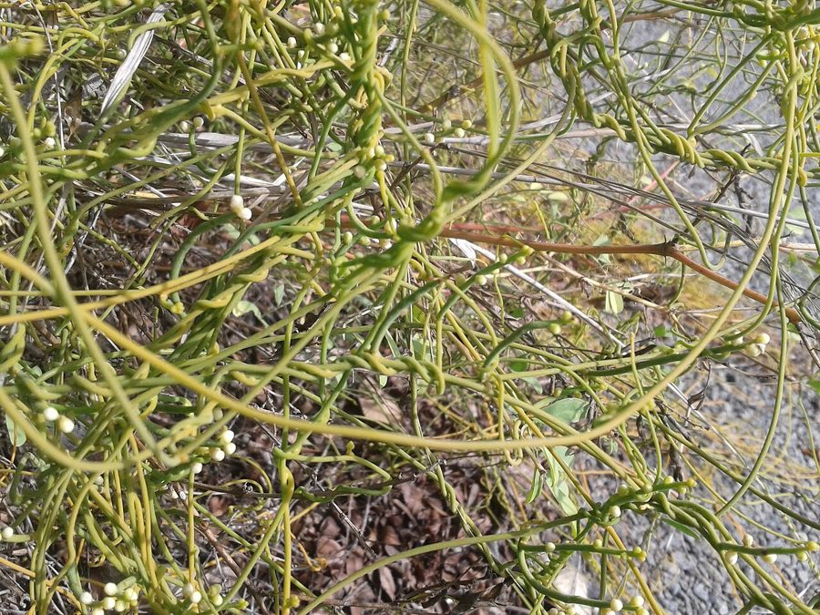

अमरबेलGiant Dodder
Cuscuta reflexa · Convolvulaceae · FLR-0079

- Scientific name
- Cuscuta reflexa Roxb.
- Family
- Convolvulaceae
- Hindi
- अमरबेल
- Status here
- native
- IUCN
- not evaluated
When to look कब देखें
Present all year.
अमरबेल / Giant Dodder
Cuscuta reflexa Roxb. — Convolvulaceae
अमरबेल (आकाशबेल / जाइंट डॉडर) — पूर्वी उत्तर प्रदेश के जंगलों, सड़कों के किनारों, और बागीचों में झाड़ियों व पेड़ों (विशेष रूप से बबूल, बेर और मेंहदी की बाड़) के ऊपर पाए जाने वाली एक अत्यंत विशिष्ट, धागे जैसी परजीवी बेल (twining parasitic vine) है। इस पौधे की सबसे बड़ी और मुख्य विशेषता यह है कि इसमें कोई क्लोरोफिल (हरितलवक) नहीं होता और न ही इसकी जड़ें मिट्टी में होती हैं। यह पूरी तरह से पीली-नारंगी रंग की, बिना पत्तियों वाली रस्सी जैसी लताओं के रूप में दिखाई देता है। यह अपने पोषक पौधों (host plants) से पानी और भोजन प्राप्त करने के लिए विशेष चूसक अंगों (haustoria) का उपयोग करता है, जो पोषक पौधे के तने के अंदर घुसकर उसके संवहनी तंत्र (vascular tissue) से जुड़ जाते हैं। संस्कृत में इसे 'अमरवल्ली' कहा जाता है क्योंकि यह मिट्टी के बिना भी सालों साल जिंदा रहती है। पारंपरिक चिकित्सा में इसके पेस्ट को बुखार और सिरदर्द के इलाज के लिए माथे पर लगाया जाता है।
Quick Identification त्वरित पहचान
| Feature | Description |
|---|---|
| Plant habit | Obligate parasitic twining vine; stems are thick (1.5–3 mm), fleshy, string-like, bright yellow-orange or pale green |
| Leaves | Completely absent, reduced to tiny, microscopic scales along the yellow stems |
| Roots | Absent in mature plants; seedlings germinate in soil but die if they do not find a host within days |
| Flowers | Small (6–8 mm), bell-shaped, fleshy, white or cream-colored, arranged in short spikes, smelling mildly sweet |
| Haustoria | Specialized root-like attachment pads that pierce the bark of the host tree to suck sap and water |
Field tip: Look at roadside wild hedges (Acacia or Ziziphus) in September. Watch for a dense, bright yellow or orange net of thick, leaf-free strings completely covering and wrapping around the green host tree like a web. If you pull a string, you will see it is firmly attached to the host bark by small warty suction cups.
Morphology आकारिकी
Biometrics (typical measurements of mature plants in the northern Indian plains):
| Measurement | Range |
|---|---|
| Stem diameter | 1.5–3.0 mm |
| Vine length | Up to 10 m or more |
| Flower length | 6–8 mm |
| Capsule diameter | 6–8 mm |
| Seed size | 3.0–3.5 mm |
| Weight of 100 seeds | 1.0–1.5 g |
Stem and Branches: The stems are thick, fleshy, highly branched, hairless, yellow, orange, or light green. They twine tightly around host twigs in a counter-clockwise direction.
Foliage: Leaves are absent, which reduces water loss through transpiration since the parasite relies entirely on the host's water supply.
Flowers: Fleshy, cream-colored, 5-lobed, with reflexed lobes (hence the name reflexa), emerging in small clusters from the stem.
Fruit and Seeds: A round, fleshy capsule, turning black when dry, containing 2–4 hard black seeds that can remain dormant in the soil for years.
Associated Species / Interactions संबंधित प्रजातियाँ
- Parasitic Ecology: It is a complete stem parasite (holoparasite). It feeds on a very wide range of woody plants, including Babool, Ber, and invasive weeds like Lantana, sometimes killing branches or entire small host shrubs due to nutrient starvation.
- Pollinators: The small, scented white flowers attract hoverflies, ants, and small wild bees.
Pests and Diseases कीट और रोग
- Gall Weevil: Smicronyx species lay eggs inside the yellow stems, causing the plant to form round swellings (galls) which disrupt its growth.
- Fungal Rot: During extreme monsoons, Colletotrichum species can cause black rot on the fleshy yellow stems.
Traditional and Ethnobotanical Use पारंपरिक और नृवंशवनस्पति उपयोग
- Traditional Fever Paste: The fresh yellow stems are harvested, crushed into a smooth paste, and applied as a cold forehead pack to relieve high fevers and headaches.
- Ayurvedic Hair Vitalizer: In traditional herbalism, the plant is boiled with sesame oil to prepare Amarbel Oil, applied to the scalp to strengthen hair roots and reduce hair loss.
- Jaundice Folk Remedy: The fresh juice extracted from the crushed vine is mixed with a little sugar and consumed in traditional village medicine to treat jaundice and liver disorders.
- Natural Fencing Reinforcement: Village boundary hedges are deliberately infected with Amarbel; the dense, spiny yellow web binds the fence together, making it impassable for goats and dogs.
Expected Locally स्थानीय रूप से अपेक्षित
Not a field record. Written from published accounts for eastern Uttar Pradesh. No confirmed local sighting yet — if you have seen it, that is what the atlas needs.
अभी तक स्थानीय पुष्टि नहीं। यह विवरण प्रकाशित स्रोतों से है, किसी अवलोकन से नहीं।
A highly common and ecologically distinct parasitic plant found throughout the Basti district, regularly observed in the Harraiya, Vikramjot, and Basti blocks. Residents state that amarbel is particularly common on wild plum (ber) bushes and Acacia trees along rural farm roads. In November, the mass of yellow strings contrasts sharply with the green foliage of the host trees, making it a popular subject for local nature observations.
Distribution वितरण
Global range: Native to South Asia (India, Nepal, Pakistan, Bangladesh) and parts of Indochina.
In India: Widespread in all plains and states, particularly abundant in the dry and moist deciduous zones.
In Uttar Pradesh: Abundant state-wide in all districts.
In Basti district / eastern UP: Widespread across all blocks.
Research Questions शोध प्रश्न
Anyone can investigate these | कोई भी इन प्रश्नों की जाँच कर सकता है
- How many days can a cut piece of Amarbel stem survive when hung on a dry wooden pole versus a living green branch? — Test survival without host connection.
- Does Amarbel prefer infecting Babool trees over Mango trees in your village? — Survey host tree preferences in local fields.
- How does the seedling of Amarbel search for a host plant after germinating in the soil? — Observe seedling movement and growth towards nearby stems.
- What is the density of suction pads (haustoria) on a 10 cm section of Amarbel wrapping around a Ber branch? — Count and record attachment points.
- Does the growth of Amarbel reduce the flower and fruit production of its host tree in Basti? / क्या अमरबेल का संक्रमण अपने पोषक पेड़ (host tree) के फूलों और फलों के उत्पादन को कम कर देता है? — Compare fruit yield of healthy and infected trees.
Similar Species मिलती-जुलती प्रजातियाँ
| Species | How to tell apart | comparison |
|---|---|---|
| Cassytha / Laurel Dodder (Cassytha filiformis) | Pale green, thinner stems; has small yellow flowers; grows mainly in coastal sands | हरी अमरबेल — पतले हरे तने, तटीय क्षेत्र |
| Mile-a-minute Weed (Mikania micrantha) | Green vine; has large green heart-shaped leaves; photosynthesizes | मीलभर खरपतवार — हरे पत्ते, स्वयं भोजन निर्माण |
| Cellar Spider (Pholcus phalangioides) | Animal (arachnid) with thin legs; spins loose webs in dark corners; not a plant | सेलार मकड़ी — आठ पतले पैर, घरों में जाला |
Field rule: Leafless, rootless twining vine with thick (1.5–3 mm) bright yellow or orange stems, attaching to host branches via warty suction cups, and bearing small bell-shaped cream-white flowers, is the Giant Dodder (Amarbel).
Taxonomy & Classification वर्गीकरण
Original description. William Roxburgh described the Giant Dodder as Cuscuta reflexa in 1798 in his Plants of the Coast of Coromandel (Vol. 2, p. 3, plate 104). The type locality was listed as India. The genus name Cuscuta is derived from the Arabic kushkut, meaning dodder or parasitic vine. The specific name reflexa is Latin for bent backward, referring to the corolla lobes.
Subspecies. Monotypic — no subspecies are currently recognised.
Family and order placement. Placed in the order Solanales, family Convolvulaceae (morning glory family), subfamily Convolvuloideae, tribe Cuscuteae.
Phylogenetic notes. Cuscuta is the only parasitic genus within Convolvulaceae, representing a major evolutionary transition from photoautotrophy to obligate stem holoparasitism, accompanied by the evolutionary loss of functional chloroplast genes, roots, and leaves.
IUCN status rationale. Not evaluated (NE) by the IUCN Red List. It has a secure and widespread population across South Asia, facing no conservation threats.
Photo Gallery फोटो गैलरी
References संदर्भ
- Roxburgh, W. (1798). Plants of the Coast of Coromandel. London, Vol. 2, p. 3, t. 104. [original description]
- Brandis, D. (1906). Indian Trees (includes woody Cuscuta hosts). Archibald Constable & Co., London.
- Kirtikar, K. R. & Basu, B. D. (1935). Indian Medicinal Plants. Vol. III. Lalit Mohan Basu, Allahabad.
- Yuncker, T. G. (1932). The Genus Cuscuta. Memoirs of the Torrey Botanical Club.
- World Flora Online (2024). Cuscuta reflexa taxon details.
- GBIF Occurrence Data — Cuscuta reflexa, India (2010–2025).
Source file: species/flora/climbers/giant_dodder.md